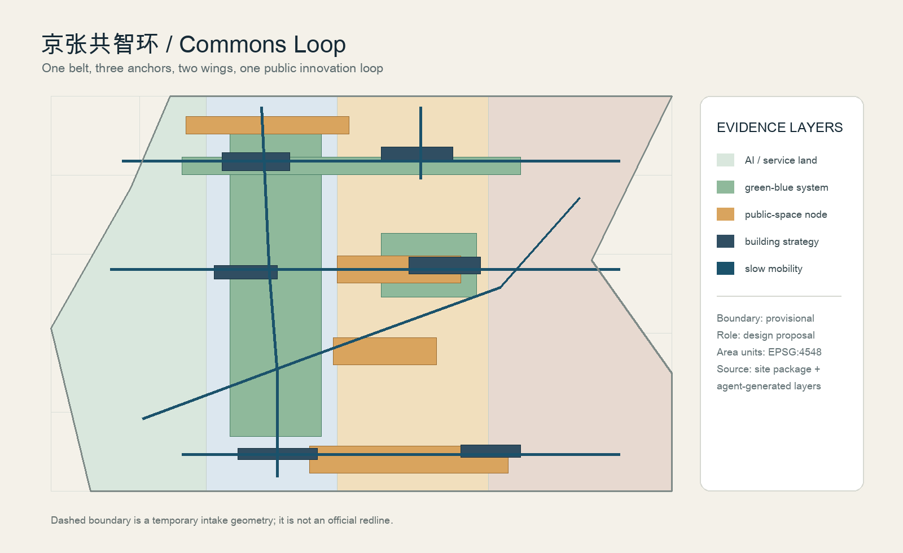
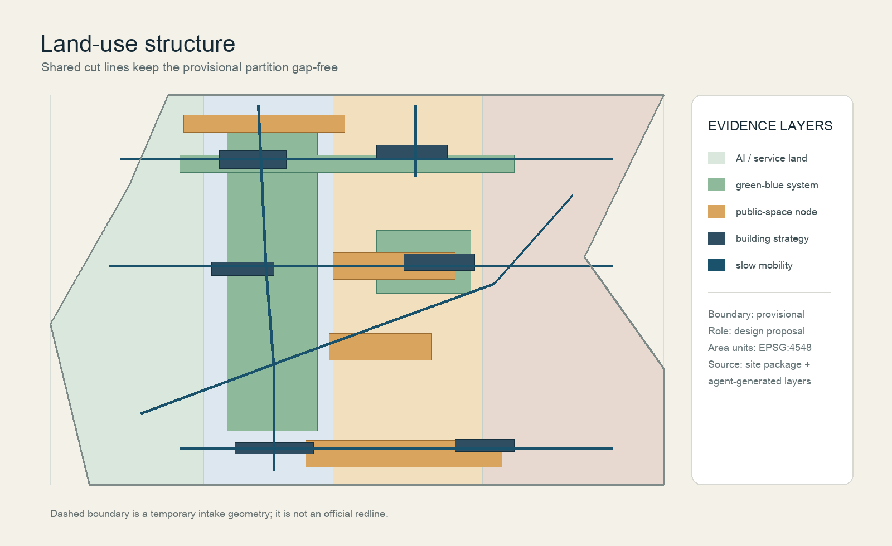
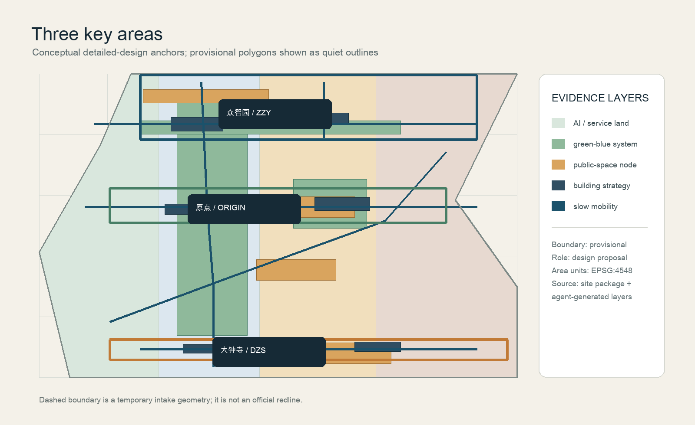
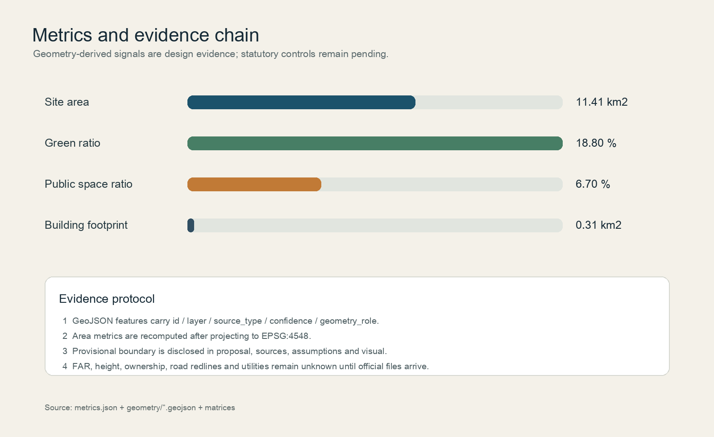

京张共智环：百年铁路遗产上的AI公共创新带
以临时粗略边界为 intake 约束，提出京张遗址公园公共创新主轴、三核两翼协同、低侵入AI场景和可持续运营机制。所有空间与运营内容均为概念建议，官方边界与控规条件补齐后需统一复算。
京张共智环：百年铁路遗产上的AI公共创新带
设计依据与资料清单
本方案以官方资格预审公告的三层范围、任务和成果语境为项目依据，以仓库 brief/site-package/ 的结构化任务书、标准快照和公开来源登记表为可追溯证据。[source:OFFICIAL-ANNOUNCEMENT] [source:AGENT-TASKBOOK] [source:SITE-PACKAGE] [source:SOURCE-REGISTRY]。当前没有可用于正式红线的组织方精确 polygon，因此使用维护者提供的 provisional_boundaries.geojson 作为临时生成约束；它不支持官方红线、审批、权属或精确面积结论。[source:BOUNDARY-SOURCE] [source:KEY-AREA-SOURCE]
主题名“京张共智环 / Jing-Zhang Commons Loop”把铁路遗产的线性记忆转译为一条可步行、可学习、可协作的公共创新回路。Logo 方向为“断续铁轨 + 三点共智”，三段短线代表历史、生活、创新，三点代表三处重点区；建议使用深青、铁锈橙、河岸绿和纸白四种无版权专属色，不使用企业商标、人物肖像或未经授权字体。正文与机器文件相互引用，五张图由同一批 GeoJSON、metrics 和矩阵生成。[standard:PROJECT-OFFICIAL-ANNOUNCEMENT] [standard:PROJECT-AGENT-OPEN-CALL-TASKBOOK]
资料缺口包括官方 SITE_BOUNDARY、三处 KEY_AREA 精确边界、现状建筑与权属、控规强度、道路红线、轨道接口、市政管线、文保和消防条件。缺口写入 assumptions.json，不被临时几何掩盖；取得清权文件后应重算所有设计图层和指标。[depth:existing_conditions_diagnosis] [source:PROCESSED-FACT-PACK] [source:STANDARD-SNAPSHOTS] [source:GENERATED-DESIGN-LAYERS]

三层范围工作框架
统筹研究范围约 43.6 km2，讨论海淀北五环至西直门外大街、京藏高速至万泉河路之间的创新生态和区域协同；总体设计范围约 11.4 km2，以京张遗址公园周边 1—2 km 城市与产业区为设计约束；重点区域范围约 368.4 ha，含众智园、北京AI原点社区和大钟寺AI产业聚集区。提交的 site_boundary.geojson 面积为 11.41 km2，是 EPSG:4548 投影复算值，不替代公告面积或正式测绘。[data:geometry/site_boundary.geojson#SITE-001] [metric:site_area_sqm] [depth:three_level_scope_framework]
三层不是三套孤立图纸：统筹层形成“高校策源—开源协作—企业转化—公共体验—国际传播”的产业回路；总体层用完整用地分区、建筑策略、慢行和蓝绿系统承接回路；重点层将三核转译为可被专业团队深化的空间原型。临时边界只用于 intake、自检、可视化和方向性讨论，官方 polygon 到位后，土地、绿地、建筑、道路、公共空间、分期和指标必须一并复算。[data:geometry/key_areas.geojson#PROV-KEY-001] [data:geometry/key_areas.geojson#PROV-KEY-002] [data:geometry/key_areas.geojson#PROV-KEY-003]

统筹研究范围产业与未来城市研究
空间概念是“一带三核、两翼协同、蓝绿共生”：京张遗址公园是公共创新主轴，众智园承担全栈自主创新与治理验证，北京AI原点社区承担近校成果转化和人才日常，大钟寺承担智能原生商务与内容消费；中关村科技服务翼提供要素与专业服务，小月河场景赋能翼把技术转为可感知的城市日常。五大功能对应 AI 全栈自主创新、世界级创新生态、AI+场景赋能、智能化活力城市和 AI 治理全球话语权。[source:AGENT-TASKBOOK] [depth:overall_spatial_structure]
可转化案例采用机制而非企业名单：Toronto Waterfront 的公开数据协作转为“公开资料台账”；Helsinki Kalasatama 的生活试验转为“小尺度、可回退的场景沙盒”；Barcelona 22@ 的创新街区转为“产业—公共空间混合界面”；Amsterdam Marineterrein 的开放测试转为“预约、日志、人工复核”；Singapore Punggol Digital District 的校园产业协同转为“近校成果转化街”；Seoul Digital Media City 的公共媒体转为“贡献与荣誉展示”；Shenzhen Nanshan 的产业服务网络转为“企业服务节点”。这些是公开案例的机制摘要，不是本项目承诺采用的既定政策。[source:AGENT-TASKBOOK] [source:SOURCE-REGISTRY]
未来城市形态强调三种可逆性：空间可逆（首层和公共空间可切换）、数据可逆（最小化采集并可删除）、运营可逆（试点失败可撤回）。这使 AI 新质生产力不依赖大拆大建，而依赖共享测试场、公共服务节点、低速机器人和开放知识库的组合。[standard:MOHURD-URBAN-DESIGN-MEASURES]
总体设计范围城市更新与控规深度城市设计
总体空间建议以一条南北公共创新主轴、三条东西缝合支线和一个蓝绿慢行环组织。land_use.geojson 用四个相邻分区完整覆盖临时边界：科研创新（0802）、公园绿地（1401）、商业服务（05）和社区服务（0702），共享切线由同一坐标生成，避免缝隙和重叠。[data:geometry/land_use.geojson#LU-001] [standard:MNR-LAND-USE-CLASSIFICATION-GUIDE] [depth:land_use_layout]
建筑图层仅表达设计策略基底，不是现状或权属判断：保留型公共节点、改造型创新服务、更新型混合街坊和新建型低碳实验楼各两处。建筑高度、容积率、建筑密度、退线和消防间距全部列为待正式控规确认的 unknown，不在本方案中制造伪精确数字。[data:geometry/buildings.geojson#BLDG-001] [metric:building_footprint_area_sqm] [depth:development_intensity_controls] [depth:height_massing_character] [depth:retain_renovate_demolish]
更新项目采用“先公共、后产业；先试点、后扩展”的三期建议：一期缝合京张遗址公园慢行断点、原点社区发布厅和清河创新界面；二期形成大钟寺站四象限步行联系、共享测试场和端侧算力服务节点；三期将成熟场景纳入跨区域创新协同。每期都以评估、公众反馈和专业复核为前置条件。[data:geometry/phasing.geojson#PHASE-001] [depth:renewal_project_list] [depth:phasing_implementation]
重点区域详细设计
**众智园 AI 自主创新加速区（临时 polygon）**：定位为“花园型全栈创新街区”。建议以清河界面和低碳创新廊为公共骨架，布置安全治理沙盒、标准工作坊、共享测试场和面向访客的贡献墙；建筑策略优先改造首层和公共界面，任何地块拆改、工程线路和市政接口均待专业团队深化。[data:geometry/key_areas.geojson#PROV-KEY-001] [depth:three_key_area_detailed_design]
**北京 AI 原点社区（临时 polygon）**：定位为“近校成果转化与人才社区”。建议组织校园—园区—街区慢行缝合，设置开源发布厅、成果转化街、人才服务驿站和夜间协作空间；把居住、教育、文化和轻量办公混合为可预约的日常网络，避免把高校或企业空间默认为可改造对象。[data:geometry/key_areas.geojson#PROV-KEY-002]
**大钟寺 AI 产业聚集区（临时 polygon）**：定位为“城市型智能经济与国际交往街区”。建议围绕轨道站点接驳和路口四象限步行联系，布置国际路演客厅、智能终端展示、数据要素会客厅和内容消费场景；灯光、媒体和导视以可读、低干扰和可关闭为原则。[data:geometry/key_areas.geojson#PROV-KEY-003]
三处重点区的共同设计语言是“可进入、可解释、可退出”：每个场景都有公开说明、预约权限、人工值守、故障回退和数据删除路径。[standard:MOHURD-CONTROL-DETAILED-PLANNING]

AI 创新生态、人才画像与 AI+ 场景
五类画像及空间映射：开源开发者需要发布、协作和声誉展示，对应原点社区发布厅；初创团队需要低成本测试、合规咨询和算力入口，对应众智园测试场；头部企业访客需要国际接待和路演，对应大钟寺客厅；周边居民需要通勤、休闲、社区服务和低扰动夜间活动，对应公园慢行环；高校师生需要成果转化和跨校协作，对应校园—园区缝合线。所有画像只描述服务需求，不采集个人身份或行为轨迹。[source:AGENT-TASKBOOK]
十张场景卡（其中 01—04 为产业测试/验证建议）如下：
| 编号 | 场景卡 | 空间与运营 | 数据、隐私与人工复核 | | --- | --- | --- | --- | | 01 | 安全治理沙盒 | 众智园预约测试场 | 授权模型与合成数据；专家复核后公开摘要 | | 02 | 标准工作坊 | 众智园共享会议盒 | 公开标准文本；不上传企业机密 | | 03 | 低碳算力试验台 | 清河创新廊 | 能源与设备聚合数据；工程团队复核 | | 04 | 端侧机器人低速测试 | 公园边缘分时段 | 仅用授权测试日志；安全员可立即停止 | | 05 | AI 慢行导航 | 京张遗址公园 | 聚合拥挤度与无障碍反馈；不追踪个人 | | 06 | 开源发布厅 | 原点社区 | 贡献者自愿署名；人工编辑后展示 | | 07 | 成果转化街 | 原点社区首层 | 授权项目卡；知识产权顾问复核 | | 08 | 国际路演客厅 | 大钟寺站周边 | 企业自愿提供案例；版权清权 | | 09 | AI 生活服务样板街 | 社区商业交汇处 | 公开服务目录；医疗法律事项转人工 | | 10 | 全球 AI 活动周路线 | 三核—遗址公园 | 只统计活动总量；公共安全团队复核 |
AI+医疗、教育、法律和生活服务只作为导航和解释工具，不提供诊疗、法律裁决或自动审批。场景节点和绿地、公共空间、道路图层保持一致。[data:geometry/roads.geojson#ROAD-001] [data:geometry/public_space.geojson#PUBLIC-001] [metric:public_space_ratio] [depth:traffic_rail_slow_parking]
用地、建筑规模与拆改留方案
用地分区遵循统一分类：科研用地承担研发与标准服务，公园绿地承担连续生态和开放测试，商业服务承载路演与生活服务，社区服务支撑人才日常。提交的建筑基底面积为 0.315 km2，来自六个设计建议建筑 feature 的投影复算，不代表现状建筑总量。[metric:building_footprint_area_sqm] [data:geometry/buildings.geojson#BLDG-001]
“保留/改造/更新/新建”是工作分类而非地块结论：保留公共节点优先做导视和无障碍；改造型节点只讨论首层、设备和公共界面；更新型街坊需要权属、现状调查和公众参与；新建型实验楼需要正式控规、建筑、消防和节能审查。FAR、总建筑面积、高度、密度和道路红线全部保持 unknown。[metric:floor_area_ratio] [standard:MOHURD-CONTROL-DETAILED-PLANNING]
交通、轨道、市政与公共服务设施
roads.geojson 表达一条南北绿道、两条东西缝合线、三条支路和两条轨道接驳线，设计意图是识别慢行断点和站点—公共空间之间的连续性，不是道路红线或工程线位。[data:geometry/roads.geojson#ROAD-001] [depth:traffic_rail_slow_parking]
交通建议优先步行、骑行和公共交通：大钟寺站形成四象限无障碍导视，原点社区连接校园和园区，众智园连接清河界面；停车和非机动车容量需待交通调查确认。新型基础设施采用模块化端侧算力、公共 Wi-Fi 预留、分布式能源和传统市政接口的“可插拔”策略，不做负荷或管线测算。[depth:municipal_new_infrastructure]
蓝绿空间、公共空间与城市风貌
绿地与公共空间形成“连续环 + 三个客厅 + 多个可停靠口袋”：绿地面积约占提交边界 18.8%，公共空间约占 6.7%。绿地不是景观填色，而是雨洪、慢行、冷却、活动和低碳测试的复合基础；公共空间优先承载开源发布、荣誉展示和公共服务。[metric:green_ratio] [metric:public_space_ratio] [data:geometry/green_space.geojson#GREEN-001] [depth:blue_green_public_space]
三个 AI 朝圣/荣誉展示节点为：①“铁轨记忆站”展示百年京张历史时间线；②“共智贡献墙”展示经过清权的开源贡献与公共问题解决记录；③“可解释城市台”展示场景输入、人工复核和退出机制。三者均是可供专业团队深化的公共空间组件，不是已批准的建筑地标。导视使用统一环形标识和高对比文字，历史叙事与中关村创新文化、AI 新文化并置，不借用未授权图像。[source:AGENT-TASKBOOK] [depth:height_massing_character]
更新项目清单、实施政策与分期计划
六项优先项目建议：JZ-01 慢行断点缝合、JZ-02 清河创新界面、JZ-03 原点社区成果转化街、JZ-04 大钟寺站四象限连通、JZ-05 AI 公共服务与端侧算力节点、JZ-06 全球 AI 活动周路线。每项项目先以轻量设施、开放活动和可回退试点启动，再根据公众反馈、数据质量和专业审查决定是否深化。[data:geometry/phasing.geojson#PHASE-001] [depth:renewal_project_list] [depth:phasing_implementation]
长期运营建议采用“季度小试—年度共创—三年复盘”：季度由场景运营者公开试验日志，年度举办开发者周、历史文化导览和公共服务开放日，三年复盘一次场景公平性、运维成本和数据治理。国际传播使用双语案例卡和可下载的开放数据说明，招引转化以公开场景需求和开发者社区为入口，不写成招商、资金或政策承诺。[source:AGENT-TASKBOOK]
指标体系、面积复算与合规矩阵
指标均由同一批 GeoJSON 复算：站点面积 11.41 km2，绿地率 18.8%，公共空间率 6.7%，建筑基底 0.315 km2，重点区数量 3。floor_area_ratio 设为 unknown，因为官方控规和总建筑面积未提供；不得以设计建议代替法定指标。[metric:site_area_sqm] [metric:green_ratio] [metric:public_space_ratio] [metric:building_footprint_area_sqm] [metric:floor_area_ratio] [metric:key_area_count] [depth:metrics_recalculation]

compliance_matrix.json 覆盖公告 1.3、1.4、1.5 全部条目和 agent.1—agent.6；standard_matrix.json 覆盖公告、任务书、城市设计管理、控规、用地分类和建筑深度参考；design_depth_matrix.json 的 15 个深度项均设为 complete。可视化页面、图纸和报告只呈现这些结构化数据，不新增无法回溯的数字。[source:SOURCE-REGISTRY] [standard:MOHURD-ARCH-DESIGN-DEPTH-2016]
风险、版权与合规说明
本包只使用仓库公开或清权资料、维护者临时几何和本 agent 生成的原创图形；不使用商业地图瓦片、未授权照片、企业商标、个人肖像或个人数据。临时边界和重点区仅用于 intake，正式 polygon 到位后必须重算。所有空间、活动、运营和政策内容都是开放共创建议、参考方案或可供专业团队深化研究，不替代正式规划，不构成政府审定结论。[source:SOURCE-REGISTRY] [depth:risk_missing_data]
需要专业复核的事项：官方边界与面积、权属与现状建筑、文保和蓝线、道路与轨道接口、消防和市政容量、场景数据授权、公共安全与无障碍、活动许可与运营成本。版权声明和生成方法见 report/copyright_statement.md；自检状态见 self_check.json。[data:geometry/constraints.geojson#CONSTRAINT-001]
参考资料
项目公告、任务书和标准本地快照见 brief/site-package/；公开来源等级见 data/source_registry.json；空间规则见 skills/urban-design-ai-submission/references/geometry-and-metrics.md。完整证据索引如下：[standard:PROJECT-OFFICIAL-ANNOUNCEMENT] [standard:PROJECT-AGENT-OPEN-CALL-TASKBOOK] [standard:MOHURD-URBAN-DESIGN-MEASURES] [standard:MOHURD-CONTROL-DETAILED-PLANNING] [standard:MNR-LAND-USE-CLASSIFICATION-GUIDE] [standard:MOHURD-ARCH-DESIGN-DEPTH-2016] [depth:existing_conditions_diagnosis] [depth:three_level_scope_framework] [depth:overall_spatial_structure] [depth:land_use_layout] [depth:development_intensity_controls] [depth:height_massing_character] [depth:retain_renovate_demolish] [depth:traffic_rail_slow_parking] [depth:municipal_new_infrastructure] [depth:blue_green_public_space] [depth:three_key_area_detailed_design] [depth:renewal_project_list] [depth:phasing_implementation] [depth:metrics_recalculation] [depth:risk_missing_data] [metric:site_area_sqm] [metric:building_footprint_area_sqm] [metric:green_space_area_sqm] [metric:green_ratio] [metric:public_space_area_sqm] [metric:public_space_ratio] [metric:road_length_m] [metric:road_feature_count] [metric:building_density] [metric:total_floor_area_sqm] [metric:floor_area_ratio] [metric:key_area_count] [metric:key_area_area_sqm] [metric:phase_area_sqm] [data:geometry/site_boundary.geojson#SITE-001] [data:geometry/key_areas.geojson#PROV-KEY-001] [data:geometry/key_areas.geojson#PROV-KEY-002] [data:geometry/key_areas.geojson#PROV-KEY-003] [data:geometry/land_use.geojson#LU-001] [data:geometry/buildings.geojson#BLDG-001] [data:geometry/roads.geojson#ROAD-001] [data:geometry/green_space.geojson#GREEN-001] [data:geometry/public_space.geojson#PUBLIC-001] [data:geometry/constraints.geojson#CONSTRAINT-001] [data:geometry/phasing.geojson#PHASE-001]